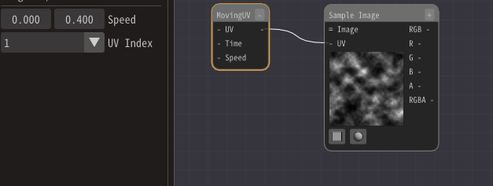
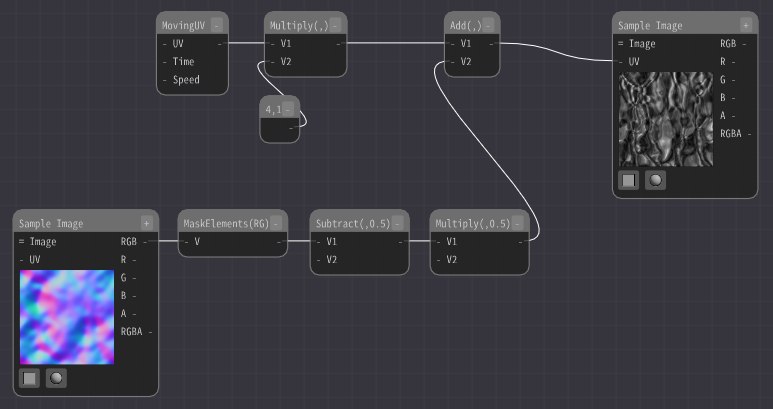
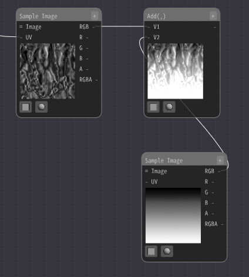
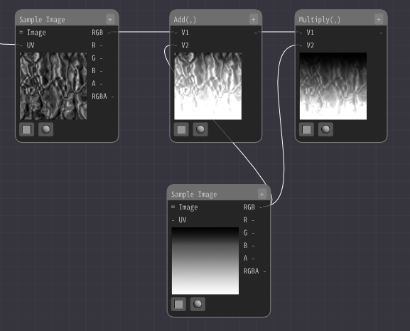
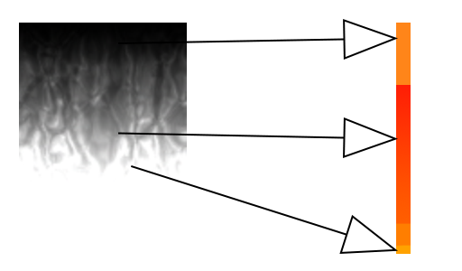
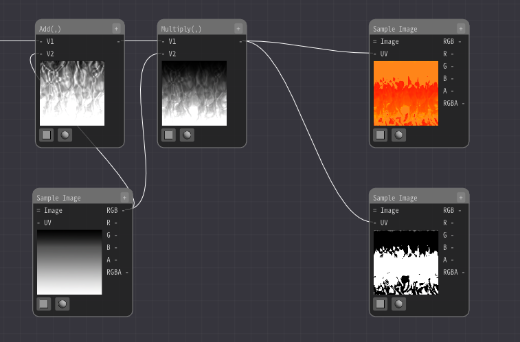
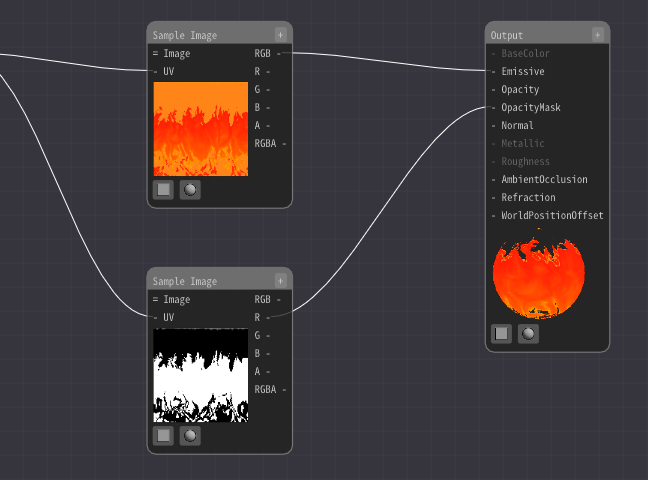
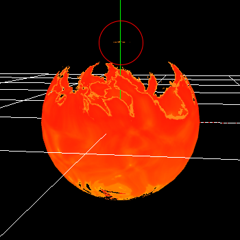
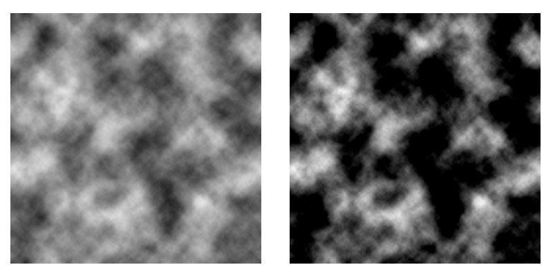

02. Represent toon-like flames with materials.¶
Overview¶
In this chapter, we will use materials to create a toon-like flame.You can achieve complex expressions that would be difficult to achieve without materials.
Effects to be created in this chapter
Create¶
We will use various images and 3D models in this chapter. In this case, create similar material data using software you are familiar with.
Since it takes a lot of time and effort to create those data, we have prepared the data that we have already created here. I will also explain a little about how to create them, but if you are unable or unwilling to create the data, please use these.
The model and material have already been set up. See the previous chapter for creating new materials and basic usage.
The first step is to display a gray image of the first scrolling cloud pattern.
Add an Sample Image Node and select Textures/Noise1.png as the image.
As it is, it just displays the image.
Add Moving UV Node to move it.
Then, connect to the Sample Image Node.
Enter (0.0, 0.4) for the speed of the moving UV node.
The image will now flow up and down.
However, the cloud pattern is too coarse as it is, so I will make it finer.
Connects Multiply Node to UVs of Sample Image Node.
The value of the multiplication is the output of Moving UV Node and (4.0, 1.0).
Then 1 of the UV coordinates of the image will be 4. This means that four pictures will be displayed in the range where one picture was displayed before. This time, it will be displayed horizontally a lot.

It doesn't look like a flame at all as it is. Add distortion to complicate the motion.
Add an Sample Image Node and select the distortion image Textures/Normal1.png.
Add an Mask Elements Node and extract the RG.
Then add Subtract Node and subtract 0.5.
The red and green colors in the distorted image are distorted up, down, left and right with 0.5 as 0.
Therefore, subtract 0.5 from the center.
In addition, multiply by 0.5 to adjust the intensity of the distortion.
Then, add the distortion value to the UV.
When I did so, the image became distorted. It may look somewhat like a flame.
The flame is darker at the top and brighter at the bottom. To achieve this, we can add or multiply gradient images.
Add an Sample Image Node and select the image Textures/Gradation1.png.
Then, the distorted image and the added image are added together with Add Node.
Then, add it to the distorted image from earlier with the addition node.
The image is now glowing at the bottom.
Next, to darken the upper part of the image, we multiply the previous image and the added image with the Multiply Node.
When I did so, the upper part of the image became darker. It has become somewhat like a flame.
Finally, color it.
Use a colored gradient image for coloring.
Add an Sample Image Node and select the image Textures/Gradation2.png.
Then, the Mask Elements Node extracts the RG from the flowing image.
Enter it into the UV.
Then the color will now change along the gradient image.

The position where the gradient image is referenced changes according to the color of the input flowing image. This will cause the color to change according to the gradient.
Black color is 0, so it points to the top of the image, and white color is 1, so it points to the bottom of the image. We use it to turn a gray image into a color image.
There is the question of whether we can enter two RG's when we only change the position of the reference up and down. For that matter, since the color is the same in the left and right directions this time, it doesn't matter what value you enter.
Depending on the gradient image, you may want to fix the R value and change only the G value.
Similarly, change the transparency.
Add an Sample Image Node and select the image Textures/Gradation3.png.
Connect the flowing images in the same way.White areas will be opaque and black areas will be transparent.
Connect the output of the Sample Image Node to the Emmisive.
Connect the output of the Sample Image Node to the OpacityMask.
The flame pattern is now displayed.
However, the colors of the small parts are not correct.
The reason for this is that repeat is selected when referring to the image in the Sample Image Node.
There are two types of images: clamp and repeat. This is a parameter for how to handle the ends.
When the UV coordinate exceeds 1.0, you can specify whether the edge will be treated as an edge color or whether the edge will be repeated. When referring to the end, if it is set to repeat, it will refer to the opposite side.
The left is the clamp and the right is the repeat.

If the color value exceeds 1.0 (255) or falls below 0, the result of referring to the other side will be wrong colors.
It can exceed 1.0 due to errors in the calculation, and in this case, because the images are added.
Therefore, we will change the repeat of the gradient's Sample Image Node to clamp.
It is now complete.
Finally, I have made the effects created in this chapter available for download.
How to create a cloud image¶
This time I am using PhotoShop. Create a new image with a resolution of 1024 and select Clouds in PhotoShop. Increase the contrast so that the black and white appear stronger.
Then, reduce the resolution to 512 and save it.
How to create a distorted image¶
This time I am using PhotoShop. Create a new image with a resolution of 1024 and select Clouds in PhotoShop.
Next, we will create a 3072x3072 image. Copy 9 cloud patterns from the previous step. This is to make it easy to create a loop image. Then, create the normals.
Finally, cut out the center 1024x1024 image, shrink it to 512, and save it.

How to create a gradient image¶
It is created with PhotoShop's gradient. Since it is a toon, the colors are made to change abruptly.
Summary¶
In this chapter, we have created a flame. For clarity, multiple images are separated, but in practice, images may be merged to make them lighter.
However, this will only result in a fixed continuous flow of flame. In the next chapter, we will be able to apply this to a variety of things.